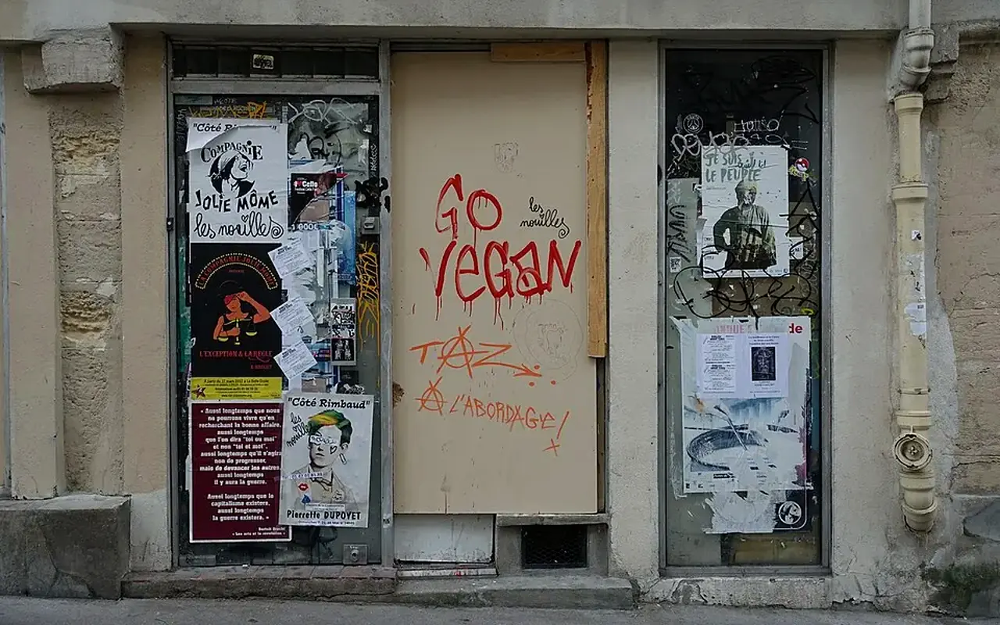

Projet pilote officiel
Dossier territorial Saint-Étienne
Un diagnostic public et sourcé pour comprendre les dynamiques de population, de logement, d’emploi, de pauvreté, de commerce et de renouvellement urbain qui structurent le premier territoire pilote de TVF.

Territoire pilote
Observer avant d’agir, coopérer avant de promettre
Saint-Étienne est le siège national de TVF et le premier territoire retenu pour tester sa méthode.
Ce que cela signifie
Construire une contribution locale à partir d’un diagnostic transparent et d’un dialogue avec les acteurs existants.
Ce que cela ne signifie pas
TVF ne revendique aucun projet public ou privé déjà engagé sur la commune.
Cadre de lecture
Les données sont sourcées, datées et à actualiser à chaque nouveau millésime.
Le dossier croise les données INSEE disponibles en juin 2026, les ressources publiques de la Ville, de l’EPASE, de l’ANCT, du Cerema et des services de l’État. Les indicateurs sont datés ; ils devront être actualisés à chaque nouveau millésime.
Une ville stabilisée après plusieurs décennies de recul
La population communale est passée de 223 223 habitants en 1968 à 170 049 en 2011, reflet des transformations industrielles, résidentielles et métropolitaines. Entre 2011 et 2022, elle progresse de nouveau légèrement pour atteindre 172 569 habitants. Cette stabilisation est un point d’appui, mais elle ne résume pas les écarts entre quartiers, l’état du parc ancien ou la capacité des ménages à se loger.
1968
223 223
1999
180 210
2011
170 049
2022
172 569
Une vacance nettement supérieure aux repères régional et national
En 2022, l’INSEE recense 12 313 logements vacants à Saint-Étienne, contre 11 070 en 2011.
Part du parc
Environ 12,2 % à Saint-Étienne, contre 8,5 % en Auvergne-Rhône-Alpes et 8,0 % en France.
Situations possibles
Rotation, travaux, indivision, dégradation, inadéquation du logement ou vacance structurelle.
Rôle TVF
Qualifier les situations avant toute action : durée, propriété, état, potentiel d’usage et contraintes.
| Territoire | Logements | Logements vacants | Part estimée |
|---|---|---|---|
| Saint-Étienne | 101 006 | 12 313 | 12,2 % |
| Auvergne-Rhône-Alpes | 4 671 276 | 394 947 | 8,5 % |
| France | 37 527 880 | 2 987 746 | 8,0 % |
1999
10 625
2011
11 070
2016
11 791
2022
12 313
TVF propose de compléter ce constat par une qualification fine : durée de vacance, état, propriété, localisation, potentiel d’usage, contraintes juridiques et souhait du propriétaire. Un volume statistique ne suffit pas à déterminer quels logements peuvent effectivement être remis en usage.
Des fragilités sociales qui imposent une approche utile et accessible
Les indicateurs sociaux invitent à relier revitalisation, emploi, formation et services de proximité.
Chômage
19,1 % au sens du recensement 2022 à Saint-Étienne, contre 10,0 % en Auvergne-Rhône-Alpes.
Pauvreté
30,4 % en 2023 à l’échelle communale, contre 14,2 % dans la région.
Lecture TVF
La remise en usage de lieux doit aussi soutenir l’insertion, les compétences et le pouvoir d’agir.
| Indicateur | Saint-Étienne | Auvergne-Rhône-Alpes | France |
|---|---|---|---|
| Taux de chômage | 19,1 % | 10,0 % | 11,7 % |
| Chômage des 15-24 ans | 27,3 % | 19,4 % | 22,9 % |
| Niveau de vie médian | 20 880 € | 26 920 € | Non repris ici |
| Taux de pauvreté | 30,4 % | 14,2 % | Non repris ici |
Mesurer l’offre existante sans inventer un taux de vacance commerciale
L’INSEE documente les commerces en activité : en 2024, Saint-Étienne compte notamment 145 boulangeries-pâtisseries, 121 épiceries ou supérettes et 230 établissements de coiffure.
Donnée disponible
Le tissu commercial actif peut être lu par catégorie d’établissement.
Donnée non disponible
Le dossier ne dispose pas d’un taux harmonisé de vacance commerciale locale.
Méthode proposée
Croiser données autorisées, connaissance des rues, acteurs consulaires et signalements qualifiés.
Donnée manquante à ne pas inventer : TVF ne publie pas de taux local de vacance commerciale tant qu’une source, une date, un périmètre et une méthode de comptage ne sont pas disponibles. L’Observatoire doit justement rendre cette limite visible.
Repérage de rue
Localiser les cellules fermées, vérifier leur statut et distinguer fermeture temporaire, travaux, vacance durable ou changement d’usage.
Besoin du quartier
Relier chaque local aux services manquants, aux flux, aux habitants, aux loyers, à l’accessibilité et aux contraintes techniques.
Usage transitoire
Étudier boutique éphémère, atelier, espace associatif ou test d’activité sans présenter ces usages comme automatiquement possibles.
S’inscrire dans un territoire déjà engagé dans sa transformation
Saint-Étienne dispose d’un écosystème public de renouvellement urbain déjà documenté.
Ce qui existe
Friche Termoz, transformations de Jacquard, réactivation commerciale, OPAH-RU Saint-Roch et expérimentation de matériauthèque.
Statut des mentions
Ces initiatives sont citées comme contexte territorial existant, pas comme partenariats annoncés.
Position TVF
Comprendre l’existant avant de proposer une contribution complémentaire et proportionnée.
Manufacture Plaine-Achille
Un secteur où patrimoine industriel, innovation, activités et reconversion de friches sont déjà articulés par les acteurs publics.
Source EPASEJacquard et habitat ancien
Un quartier où la réhabilitation du parc, l’espace public et l’attractivité résidentielle demandent une approche coordonnée.
Source EPASERéemploi déjà expérimenté
Le territoire dispose d’expériences de matériauthèque et de vente de matériaux d’occasion que TVF doit connaître avant de proposer une contribution complémentaire.
Source EPASESix chantiers de cadrage territorial à soumettre au territoire
Les priorités ci-dessous sont des axes de travail. Elles ne constituent ni des projets financés ni des engagements pris au nom d’acteurs publics.
Atlas de la vacance
Qualifier progressivement les logements, commerces et espaces inoccupés à partir de données licites et de vérifications locales.
Parcours propriétaires
Orienter vers les dispositifs existants, clarifier les blocages et étudier les situations compatibles avec Bien Solidaire à Usage Partagé.
Ressources de réemploi
Repérer les gisements, besoins et acteurs existants avant de construire une banque de matériaux complémentaire.
Chantiers et compétences
Relier les projets à la découverte des métiers, au bénévolat et, lorsque le cadre le permet, à l’insertion.
Usages temporaires
Étudier des occupations encadrées pour des besoins associatifs, culturels ou de proximité.
Tableau de bord public
Publier uniquement les signalements qualifiés, projets autorisés et résultats accompagnés de leur méthode.
Contribuer au diagnostic pilote
Habitants, propriétaires, associations, entreprises et collectivités peuvent transmettre un besoin, une ressource ou une observation. Toute information est qualifiée avant publication.
Registre des sources
INSEE, dossier complet de la commune de Saint-Étienne — population et logement 2022, revenus et pauvreté 2023, équipements 2024.INSEE, dossier complet Auvergne-Rhône-Alpes — comparatifs régionaux.INSEE, dossier complet France — comparatifs nationaux.EPASE — documentation des opérations publiques citées.Dernière revue éditoriale : 24 juin 2026. Les calculs de taux TVF sont arrondis à un chiffre après la virgule.
Saint-Étienne : un diagnostic à appuyer sur les millésimes officiels
L'INSEE publie le dossier complet de la commune de Saint-Étienne avec les millésimes récents disponibles : population et logements 2023, revenus et pauvreté 2023, base permanente des équipements 2024 et données économiques actualisées. Ces sources doivent servir de base au diagnostic pilote, sans inventer de valeur lorsqu'une donnée locale doit encore être extraite ou confirmée.
Commerce et services de proximité
La BPE 2024 de l'INSEE recense notamment 43 grandes surfaces, 121 épiceries ou supérettes, 145 boulangeries-pâtisseries, 14 stations-service, 78 bornes de recharge et 230 salons de coiffure à Saint-Étienne. Ces repères ne mesurent pas directement la vacance commerciale, mais donnent une base pour qualifier les centralités et les rez-de-chaussée.
Friches et sobriété foncière
Cartofriches, porté par le Cerema, fournit un cadre national pour repérer, documenter et croiser les friches avec les données foncières, d'urbanisme, de risques et de proximité des services.
Réemploi et déchets
Le SDES indique que la France a produit 310 millions de tonnes de déchets en 2020, dont 66 % de déchets minéraux provenant principalement de la construction. Cette donnée nationale justifie un volet local de réemploi, mais ne doit pas être présentée comme un chiffre stéphanois.
Revitalisation des centralités
Le programme public Action cœur de ville cible les villes moyennes autour de cinq axes : habitat, commerce, mobilité, espace urbain et services. TVF se positionne en complémentarité, comme plateforme associative de coordination et d'expérimentation.
Sources : INSEE, dossier complet Saint-Étienne ; Cerema, Cartofriches ; SDES, bilan déchets 2020 ; ANCT, Action cœur de ville.
Relier TVF aux priorites publiques de Saint-Étienne
La page dediee montre comment TVF peut compléter les objectifs locaux en matiere d'habitat, de commerces, de friches, de climat, d'insertion et de réemploi, avec les structures compétentes.
Ce que le pilote Saint-Étienne doit produire concr?tement
Saint-Étienne ne doit pas seulement être citée comme siège de TVF. Le territoire pilote doit produire une méthode duplicable : repérage, fiches projet, conventions, budget, partenaires mobilisables, indicateurs et preuves. Les résultats seront publiés seulement lorsqu'ils seront réels.
Atlas de la vacance
Liste qualifiée des logements, commerces, bâtiments et friches à vérifier, avec statut de publication et niveau de confidentialité.
Fiches projet
Au moins une fiche type par besoin : logement, commerce, friche, matériau, insertion, local associatif.
Scénarios de financement
Identifier les guichets possibles, contributions en nature, mécénat et reste à financer, sans promettre d'aide automatique.
Tableau de bord
Suivre signalements, biens qualifiés, matériaux proposés, conventions préparées, risques levés et résultats réels.
| Livrable pilote | Public concerné | Utilité |
|---|---|---|
| Note de diagnostic | Collectivité, financeurs, partenaires | Partager une lecture sourcée du territoire. |
| Fiche bien ou ressource | Propriétaire, entreprise, association | Transformer une situation en dossier exploitable. |
| Convention type adaptée | Parties prenantes | Sécuriser rôles, durée, responsabilités et sortie. |
| Registre d'impact | Administration, mécènes, public | Publier uniquement les données vérifiées. |
Données et territoire pilote
Du constat à l'action : Dossier territorial Saint-Étienne
Cette page transforme des données dispersees en lecture opérationnelle pour decider, prioriser et suivre.
Problème
Les données existent mais restent souvent séparées : logement, commerce, foncier, environnement, insertion, financement.
Donnée utile
Sources mobilisables : INSEE, Cerema, ANCT, SDES, collectivités et jeux de données publics territoriaux.
Solution TVF
TVF prépare une méthode d'observation : reperer, qualifiér, cartographier, documenter et mettre à jour.
Méthode
Les projections sont séparées des résultats reels ; les indicateurs TVF restent à zero tant qu'ils ne sont pas vérifiés.
Acteurs
Collectivités, services de l'État, observatoires publics, chercheurs, associations, entreprises et habitants.
Impact visé
Aider les decideurs à passer du constat à la fiche projet territoriale, avec preuves et priorites lisibles.
FAQ
Questions fréquentes sur Saint-Étienne
Dossier territorial Saint-Étienne répond aux questions de diagnostic, de sources publiques et de passage du pilote local à l'action.
Comment lire les données territoriales ?
Dossier territorial Saint-Étienne distingue les sources publiques, les analyses de TVF et les projections qui devront être confirmées sur le terrain.
Pourquoi ce territoire pilote est-il utile ?
Dans Dossier territorial Saint-Étienne, Saint-Étienne sert de terrain d'étude pour relier habitat ancien, centralité, vacance, économie circulaire et mobilisation locale.
Que faut-il vérifier avant une fiche projet ?
Pour Dossier territorial Saint-Étienne, la fiche doit préciser adresse, propriété, programme public compatible, budget, acteurs mobilisables, convention, risques techniques et indicateurs.
Données officielles à jour
Saint-Étienne : repères clés pour prioriser l'action TVF
Ces chiffres ne sont pas des résultats de TVF. Ils servent à objectiver les besoins du territoire pilote, à structurer le dialogue avec les collectivités et à identifier les sujets qui méritent une qualification de terrain.
Ce que ces données changent
Une vacance élevée ne signifie pas que tous les logements sont immédiatement mobilisables. Elle indique surtout qu'un travail de qualification est n’cessaire : État du bien, propriété, blocages juridiques, coût de remise en État, potentiel d'usage et compatibilité avec les politiques publiques locales.
Le rôle utile de TVF
TVF peut apporter une méthode compl’mentaire : repérer, documenter, orienter les propriétaires, rapprocher les ressources de réemploi, structurer des scénarios conventionn’s et suivre les effets réels lorsque les projets existent.
Sources : INSEE, dossier complet Saint-Étienne.
Passer à l’action
Choisir le parcours adapté à votre rôle
Chaque demande doit être orientée vers un cadre clair : besoin territorial, propriétaire, ressource, financement, bénévolat ou coopération institutionnelle.